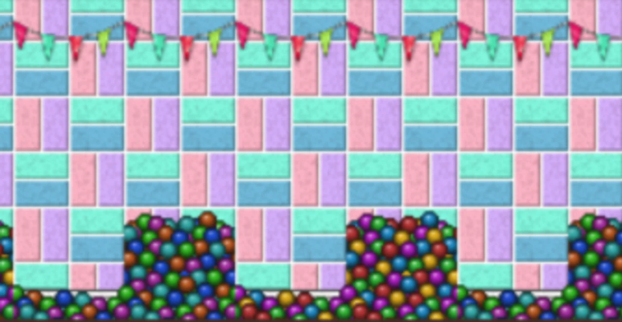
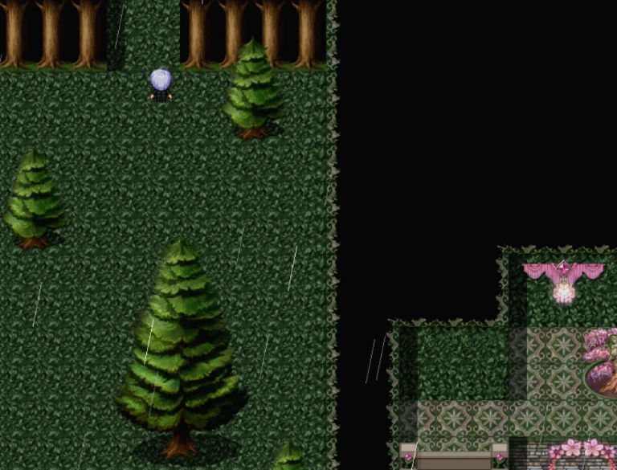
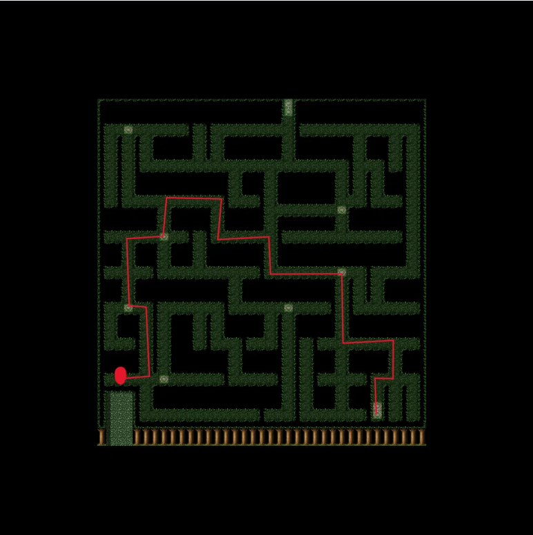

第二層前半④

部屋
| 1 | 緑の本を読みます |
緑の本
| 1 |
追いかけます  |
| 2 |
迷路に入ります  |
| 4 | 落ちている紙を調べます |
| 5 | 南(下)に進み再び迷路に入ります |
| 6 | 全体地図 赤丸がスタート |
| 7 | 落ちている紙を調べます |
| 8 | 北(上)に向かいます |
店(奥)
| 1 | 新しく出た仕事を受けます |
| 2 | ピオジャ 川辺にいる老人に話しかけます |
| 3 | シュバ 商人に話しかけます |
| 4 | 塗料を買います |
| 5 | ピオジャ 老人に塗料を届けます |
| 6 | 夜 １階に降りて本を調べます |
| 7 | 寝ます |
| 8 | 眠れないので絵本を読みます |
| 9 | アンブレラに話しかけます |
| 10 | 店(奥) 船を受け取ったら報告に行きます |
店
| 1 | ベッドを買います |
| 2 | 箱を１つ選びます ※どれを選んでも中身は同じです |